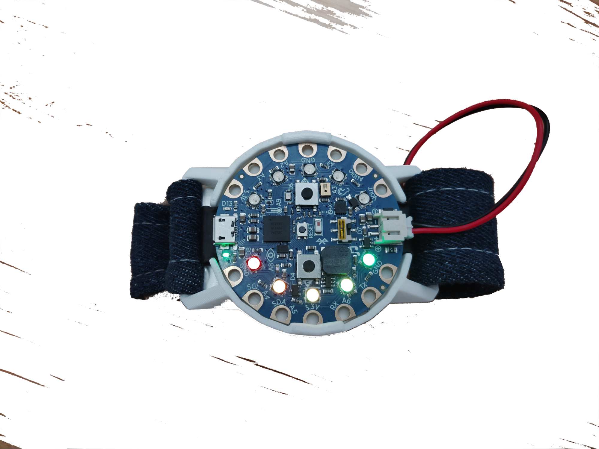
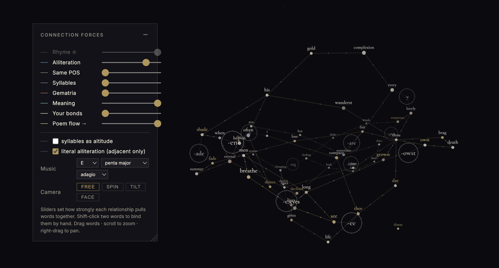
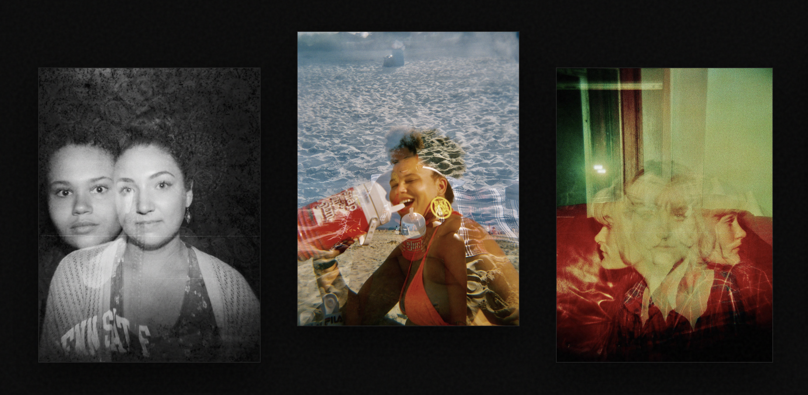

MEM
Unified Memory Hub
A local-first semantic memory layer for multi-agent workspaces, with hybrid retrieval, incremental synchronization, and a CLI/dashboard operating surface.
Read technical briefingSelected work
I work across agent infrastructure, live-sync applications, interactive data tools, model behavior, physical computing, and creative computation.
Projects related to applied AI & ML, agent systems, research engineering, and full-stack application building.
A local-first semantic memory layer for multi-agent workspaces, with hybrid retrieval, incremental synchronization, and a CLI/dashboard operating surface.
Read technical briefingA deployed multi-user workspace where people and multiple AI agents collaborate with explicit, source-aware memory boundaries.
Read technical briefingA cross-device project system paired with browser focus tooling designed around transparent allow, block, and ask decisions.
Read technical briefingRepresentation-engineering experiments investigating how activation-level interventions influence expert routing in a hybrid Mamba/MoE model.
Read technical briefingHardware and software built as one interaction surface: sensing, embedded behavior, feedback, mobile or cloud integration, and the physical form that makes the system usable.

A BLE-connected garment that checks phone connection and key presence through embedded lights and sound, with a custom Android companion for two-way locating alerts.
Read project briefingAn ESP32-S3 voice interface whose physical responses, onboard audio, and hosted-agent path turn an LLM interaction into an embodied system.
Read technical briefing
An accelerometer-controlled wearable game that translates wrist tilt into a ten-pixel play field, built through firmware, enclosure iterations, and textile design.
Read project briefingInteractive data systems and analytical work: tools for visual exploration, reproducible analysis, and making assumptions and results inspectable.
Plot, project, cluster, compare, and export tabular research data in 2D or 3D—entirely in the browser, with no upload or server.
Open live workbench
An interactive MapReduce visualization for vocabulary, distribution, similarity, and morphological exploration in a synthetic social world.
Read project contextAn analysis of nearly 90,000 student evaluations, using weighted least squares, logistic regression, PCA, and permutation testing to investigate patterns in ratings, qualitative tags, and academic discipline.
View project summaryAn exploratory hypothesis-testing project on movie preferences, behavioral measures, and demographic factors.
Read summaryCreative projects in which language, play, image-making, and computation lead the work.

A visual and linguistic workspace for exploring poetic relationships, scansion, word data, and graph-based forms.
Open live workspaceA browser game built with p5.js and optional camera controls. Keyboard play works without granting device access.
Play / read notes
35mm, 120mm, and 110mm film photography focused on multiple exposures and light leaks.
View photography